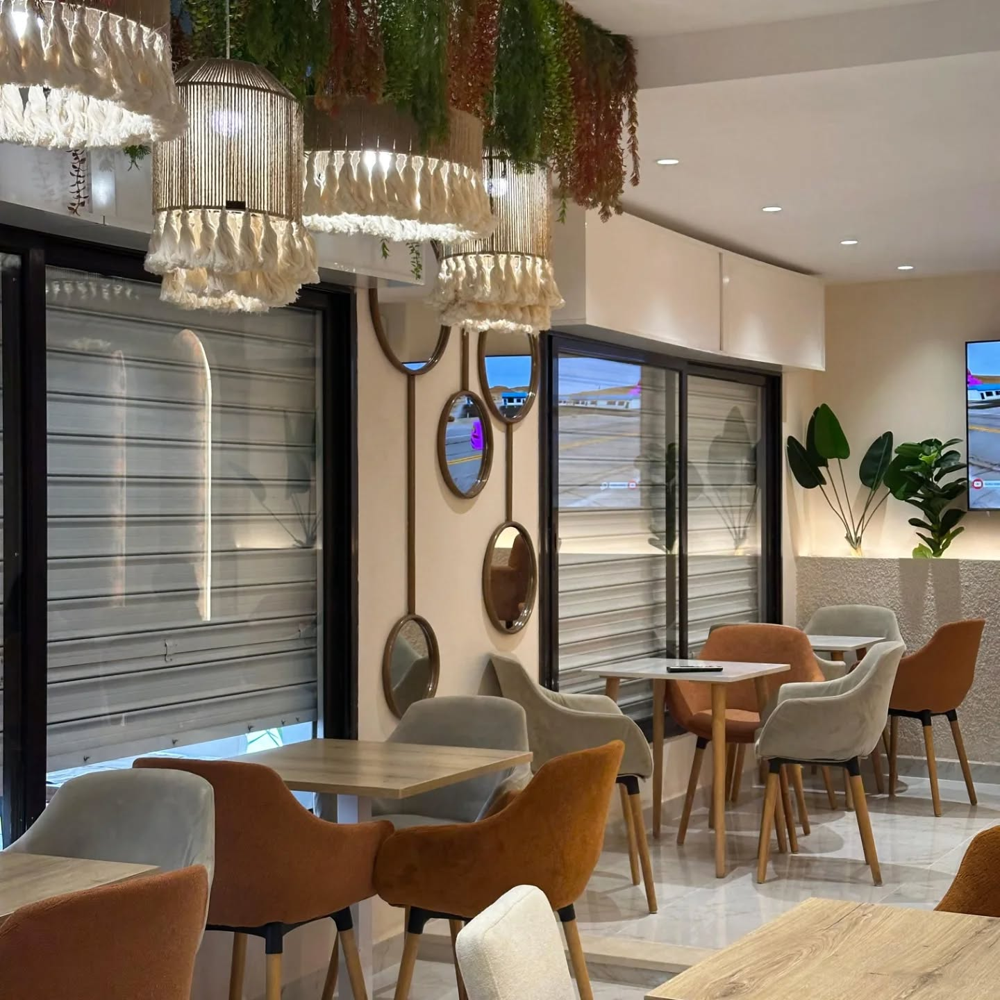
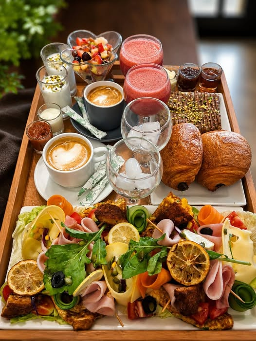

Avenue Mongi Slim · Le Kef
LÜMAItalian Kitchen & More
Des assiettes à partager, une ambiance soignée et le plaisir de prendre son temps autour de la table.
⌖ Avenue Mongi Slim, Le Kef 7100Une table · Plusieurs envies
La cuisine✳Le partage✳L’ambiance✳Le plaisir de se retrouver

Le lieu
Une atmosphère qui invite à rester.
Un cadre contemporain, des détails chaleureux et un espace pensé pour profiter du moment.
Découvrir le lieu ↗Le Kef · Avenue Mongi Slim
Galerie
LÜMA, en images.
Quelques images authentiques des plats, des boissons et de l’atmosphère du restaurant.
Photographies originales fournies pour ce projet.Voir toute la galerie ↗
Nous trouver
Votre prochaine
pause commence ici.
Retrouvez LÜMA sur l’avenue Mongi Slim à Le Kef.
Adresse
Avenue Mongi Slim
Le Kef 7100, Tunisie
Téléphone+216 97 337 588

LÜMAItalian Kitchen & More · Le Kef
Contact ↗